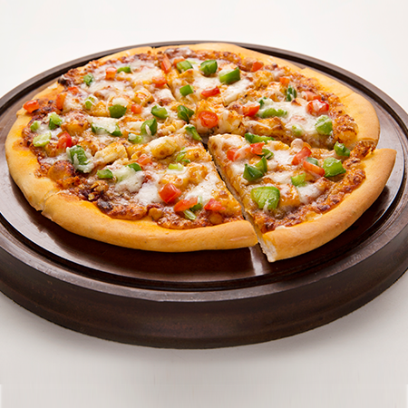

Hot, cheesy pizza loaded with your favorite veggies is one of the most fun and easy dinners to make at home. With just a few key tips you can create a restaurant-quality crust, and treat yourself to the best homemade pizza that’s completely customizable to your tastes.
1 cup warm water,
2 tsp sugar,
2 tsp dry yeast,
4 cups maida / plain flour / all-purpose flour,
salt to taste,
6 tbsp olive oil,
water as required, to knead.
for toppings:
6 tbsp pizza sauce,
10 mushrooms, thinly sliced,
6 tbsp onion, roughly chopped,
0.5 cup capsicum, roughly chopped,
18 pickled jalapeños, based on spice level,
0.5 cup black olives, chopped,
1 cup mozzarella cheese, grated,
1 tsp oregano / italian seasonings / mixed herbs.